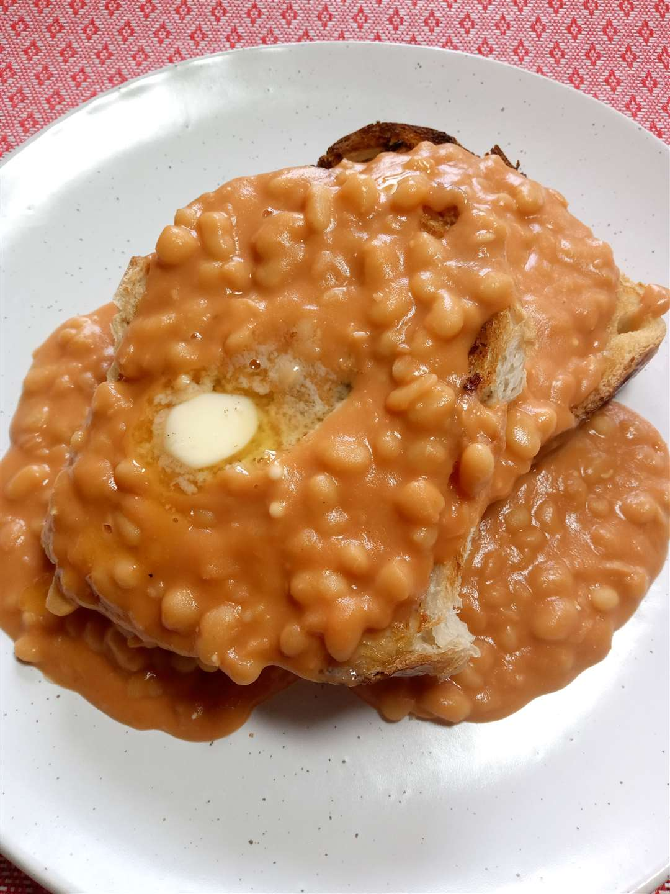

Cheesy Beans
Home

Description
A fantastic comfort food. This cheesy bean recipe is perfect on toast or as a dip.
Ingredients
- Condensed cream with bacon soup: 1 can.
- Sour cream: 1 cup.
- Cheddar cheese: 1 cup shredded.
- Onion: 1 tbsp minced.
- Taco seasoning mix 1tbsp.
Steps
- Mix the ingredients: Stir the soup, sour cream, cheese, onion, and taco seasoning together in a microwave-safe bowl.
- Microwave the beans: Microwave on high until hot, 3 to 5 minutes.
- Stir the mixture: Stir and microwave again until the cheese melts and the mixture is bubbling, 3 to 5 minutes more.
NOTE: This page is just for HTML practice. The recipe information is from allrecipes.